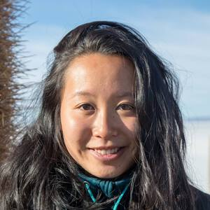

Mission Statement
The Toronto Geometry Colloquium is a live weekly hour-long webseries showcasing geometry processing research. Topics range from computer science, mathematics, and engineering including 3D deep learning, computational fabrication, and computer graphics. The unique format of the Toronto Geometry Colloquium pairs a 10-min opener speaking about a recent work with a 40-min headliner giving a keynote-style address. Part of Toronto Geometry Colloquium's mission is to promote young researchers and showcase great geometry processing research by members of traditionally underrepresented communities. Talks are broadcast live and – unless otherwise noted – recordings are available thereafter.
Upcoming Speakers (google calendar)
-
September 17th, 2021, 9:00 AM ET (Live stream)
Jing Ren, King Abdullah University of Science and Technology
Non-Rigid Shape Matching via Functional Maps
Yingying Ren, École Polytechnique Fédérale de Lausanne
“3D Weaving with Curved Ribbons” -
September 24th, 2021, 4:30 AM ET
Kelly Stevens, University of Washington
Mohammad-Sina-Nabizadeh, University of California San Diego
“Kelvin Transformations for Simulations on Infinite Domains ” -
October 1st, 2021, 2:00 PM ET
Stephanie Wang, University of California San Diego
Capturing surfaces with differential forms
Liane Makatura, Massachusetts Institute of Technology
“Pareto Gamuts: Exploring Optimal Designs Across Varying Contexts” -
October 8th, 2021, 12:00 PM ET (noon)
Caitlin Mueller, Massachusetts Institute of Technology
Mackenzie Leake, Stanford University
“A Mathematical Foundation for Foundation Paper Pieceable Quilts” -
October 15th, 2021, 10:00 AM ET
Duygu Ceylan, Adobe Research
 Emilie Yu, INRIA
“CASSIE: Curve And Surface Sketching in Immersive Environments” -
October 22nd, 2021, 12:00 PM ET (noon)
Ming C. Lin, University of Maryland
Ty Trusty, University of Toronto
“The Shape Matching Element Method: Direct Animation of Curved Surface Models”
Past Speakers
 Video
Video Video
Video (video not available)
(video not available)  Video
Video Video
Video Video
Video Video
Video Video
Video Video
Video Video
Video Video
Video Video
Video Video
Video Video
Video Video
Video Video
VideoHow do i find out about new talks?
Join the mailing list to get announcements about newly added talks.
How can i sign up to speak?
University of Toronto Organizational Team
Seungbae Bang
Hsueh-Ti Derek Liu
Otman Benchekroun
Silvia Sellán
Jiayi Eris Zhang
Advised by Alec Jacobson